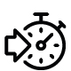

Digitalización
Integramos tus proyectos a una era digital y geoespacial
Supervición
Monitorea cambios sobre el terreno o avances de proyectos a través del tiempo, para la mejor toma de decisión.

Agilización
Ahorra tiempo en obtención de información mediante el procesamiento y análisis de datos geoespaciales.
Recolección de datos
Especialmente en zonas remotas o de difícil acceso.